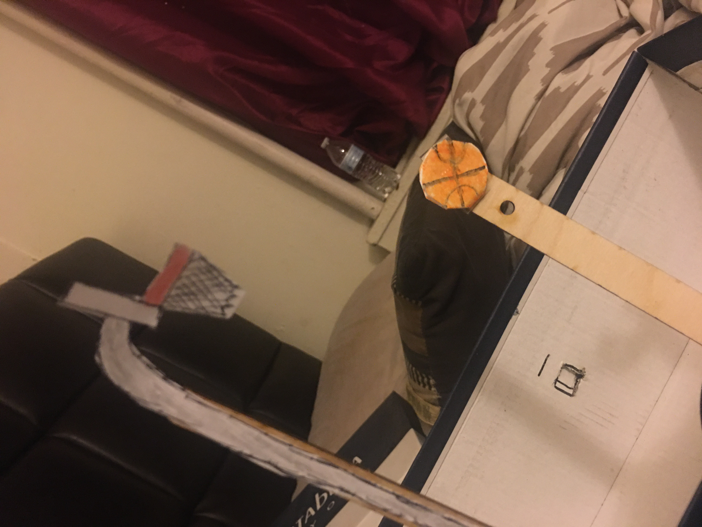
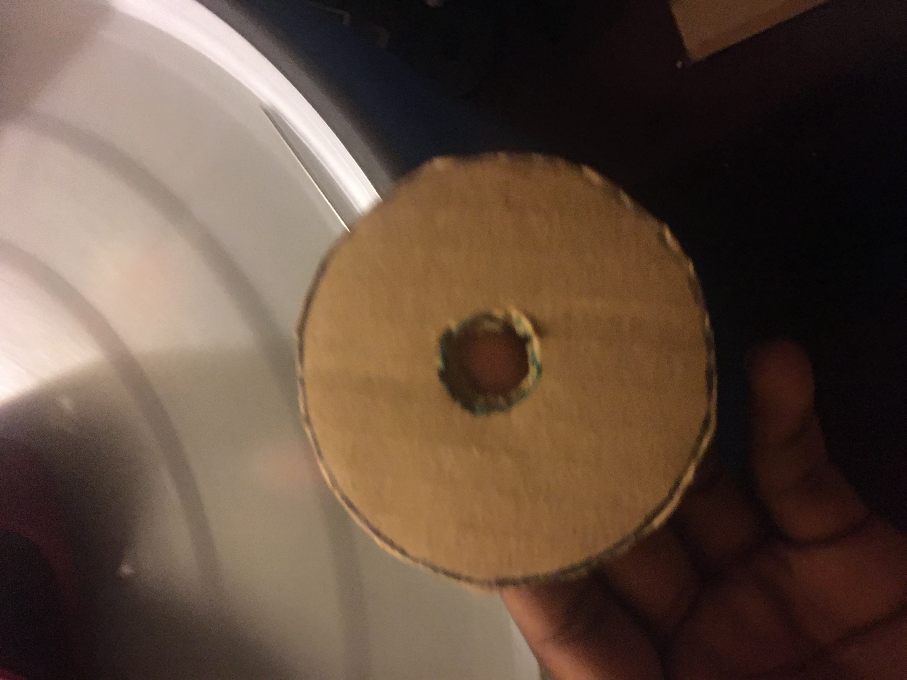
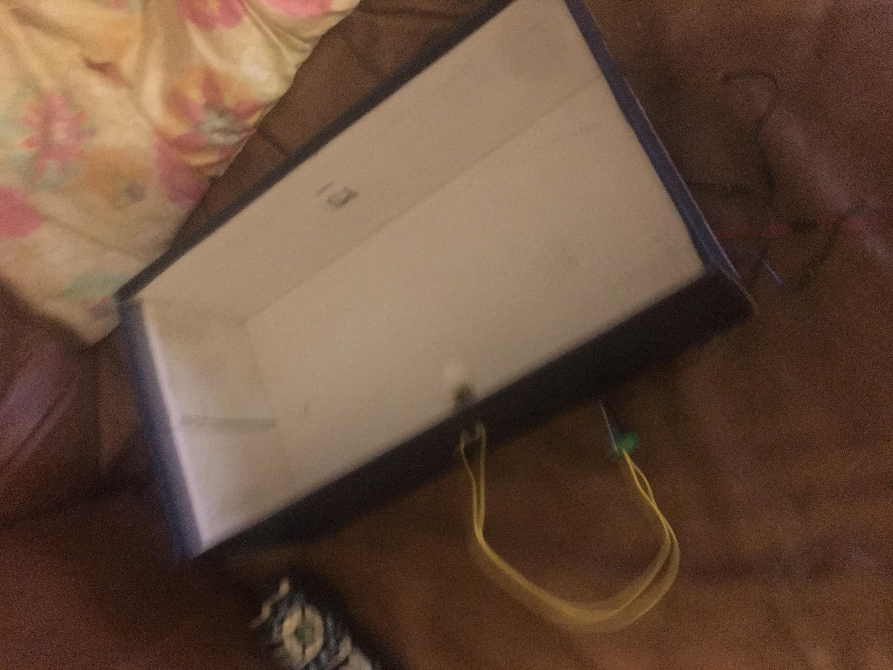
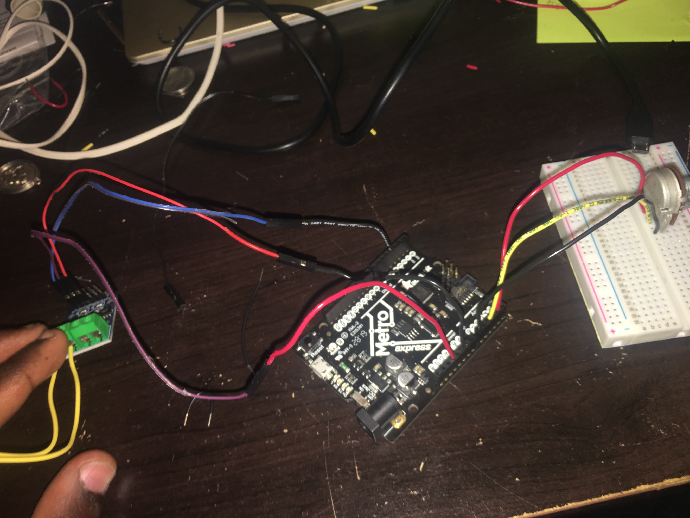
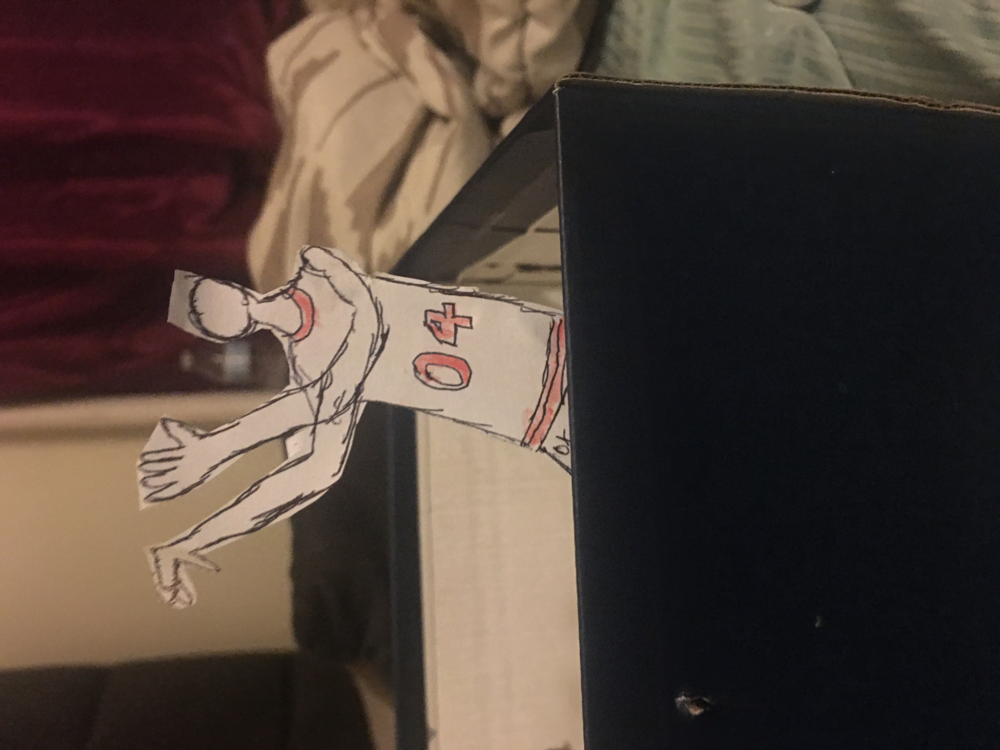

This week, which focuses on rapid prototyping, we took a look at DC motors, the first branch of motors in this course. We also explored L9110 Bridge motor drivers, which when connected to a microcontroller, would activate teh DC motor. For our assignment this week, we had to use components in the kit, along with any household items necessary to create a kinetic sculpture. For my sculpture I threw in a DC motor in the mix. My sculpture is supposed to be a basketball player shooting a basket into a hoop, over and over again.
  >To start off, I decided to use one of the codes used as an example during class. But first, I had to build a setup. Wiring this circuit was extremely tedious, with problems happening nearly every step of the way. From the USB driver not being recognized, to one of the bridge motor drivers overheating from too much voltage. Another reason this was a time-consuming task was that for a good portion of making the circuit, I had a wire pluggged into the wrong motor, so the motor would even move. Finally, i added a potentiomeer to change the direction the motor was moving. All in all, I pushed forward and was able to fix these issues.
Now that my code uploaded and my setup was finished it was time to see the end result in action. I cut a whole in an old shoebox for the DC motor, and cut out a cardboard circle to have a gear-like object. A cutout a drawing of a basketball player, a hoop, and a basketball which were glued on wooden sticks and taped inside of the box. After running a test, i noticed that the wooden stick on the basketball was moving haywire. To comabt this, I used one of the zipties and stabbed two holes in the box to slide it through. It did a decent job at tryinh yo hold up the stick, but of the screws that connected the circle and wodden stick would repeatedly hit the box causing a delay, foricing me to use my hand to make adjustments in my video:
